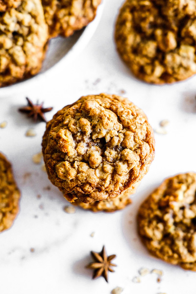

These recipes are my all time favorite! Some are harder than others. I hope you enjoy making them.
Ingredients
Notes: These came out dry and a little crackly. Next time, I would add more coconut oil and less oats.
Dry:
Wet:
Steps
Combine wet and dry ingredients separately 2. Slowly add the dry to the wet ingredient and mix to combine, if using add in your chopped walnuts 3. Place about 1 tbsp of dough onto a prepared cookie sheet and flatten with palm of hand until about 1/2 inch thick, recipe will make approx 12 cookies 4. Bake for about 12 minutes at 350 F 5. Top with a mix of your choice of yogurt a drop of maple syrup and lots of cinnamon!